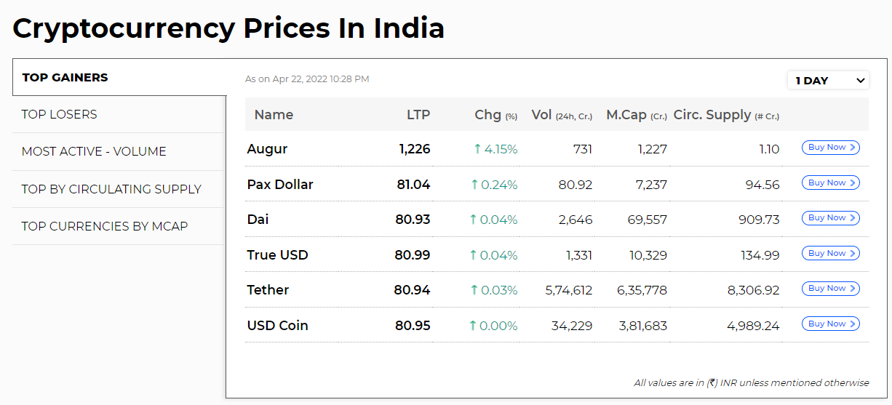

THIS IS THE ANALYSIS OF CRYPTOCURRENCY MARKET
Cryptocurrency Update: The global cryptocurrency market on Friday, APril 22, recorded a marginal dip amid the hawkish remarks of Fed chief Jerome Powell, and the US central bank’s intention of being aggressive to tackle inflation. This prompted all major crypto coins to lose value, as the top 10 tokens traded in red at the time of writing this article. The global cryptocurrency market was down by 2.28 per cent in the last 24 hours to $1.88 trillion, as per data from CoinMarketCap
“The hawkish commentary from Fed’s boss Jerome Powell is weighing the crypto markets. The US central bank is expected to be proactively aggressive to tackle the rising inflationary numbers. The risk of higher borrowing costs and potential economic recession is making the safe havens an attractive bet and thus investors are keeping off the risky assets," said Kunal Jagdale, founder of BitsAir Exchange.
Bitcoin held on to the $40,000 mark on the day but was down by over 2 per cent, the data showed. At the time of writing this article, Bitcoin fell by 2.36 per cent over the last 24 hours to trade at $40,679.75. However, over the last seven days, Bitcoin price was up by 1.39 per cent.
